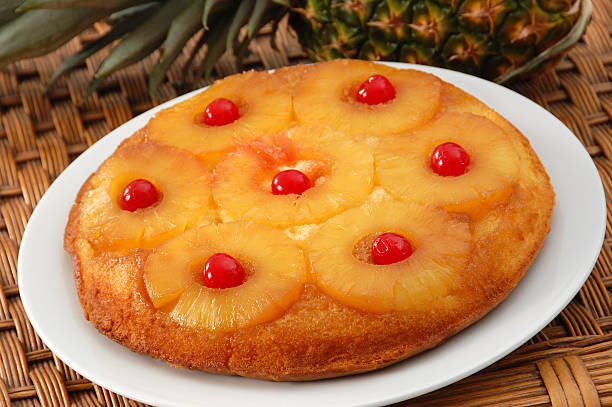

Topping:
- ¼ cup (60 g) unsalted butter, melted
- ½ cup (100 g) brown sugar
- 7–8 pineapple slices
- Maraschino cherries (optional)

A tropical twist on a classic dessert.
The pineapple turnover cake is a timeless dessert loved for its caramelized pineapple topping, tender crumb, and sweet tropical flavor. It’s perfect for family gatherings, celebrations, or just a treat yourself moment.
“A party without cake is just a meeting.” Julia Child
“Life is short, eat dessert first.” Jacques Torres